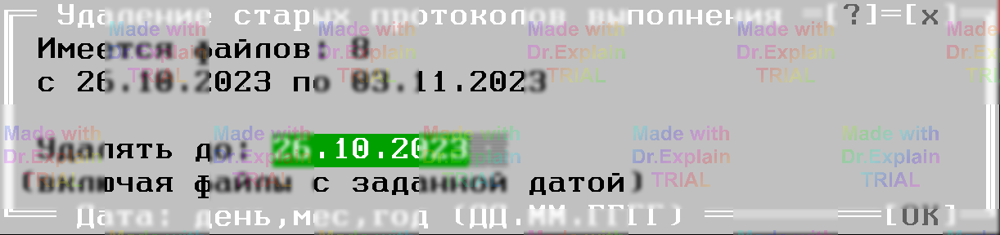
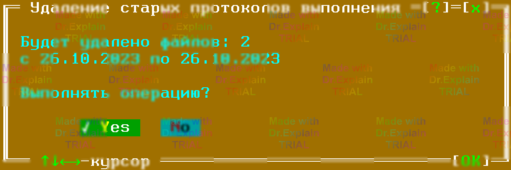

2.1.11 Команда Run / Erase — удаление старых протоколов выполнения
Горячие клавиши: Ctrl‑F7 (вариант «1») и Ctrl‑Shift‑F7 (вариант «2»)
Назначение
Команда удаляет устаревшие файлы протоколов из каталогов
HISTORY и DECINUM, куда ПО АСК
автоматически сохраняет результаты выполнения ПК
(«Весь протокол» и «Только атрибуты + ошибки» соответственно).
Как работает
- При вызове открывается диалог выбора даты — «границы удаления».
- ПО собирает список файлов, дата которых раньше или равна указанной.
- Показывается окно‑подтверждение с количеством найденных файлов.
- После утвердительного ответа файлы удаляются безвозвратно.


Замечания
- Если оставить поле даты пустым, удалятся все файлы из соответствующего каталога.
-
Команда «1» очищает
HISTORY, команда «2» —DECINUM. - Действие необратимо — убедитесь, что нужный протокол сохранён отдельно перед удалением.